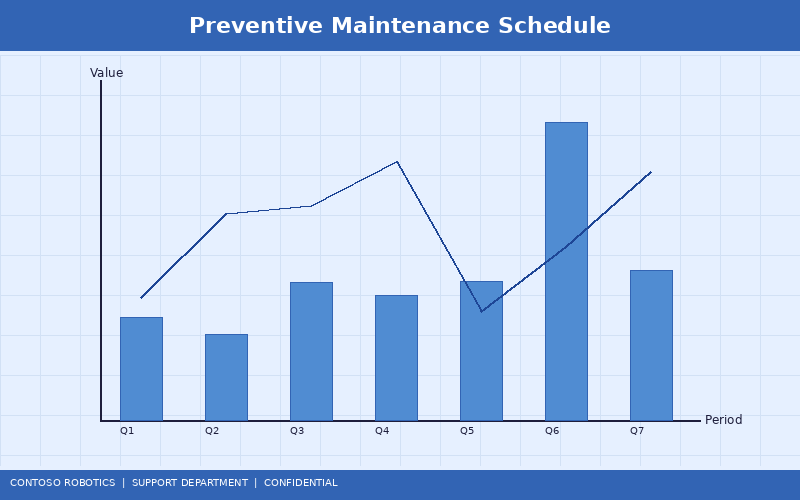
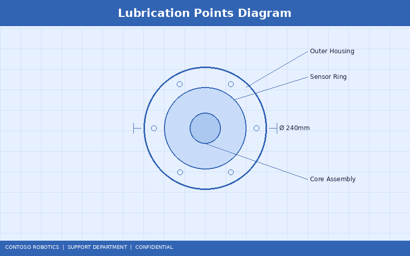
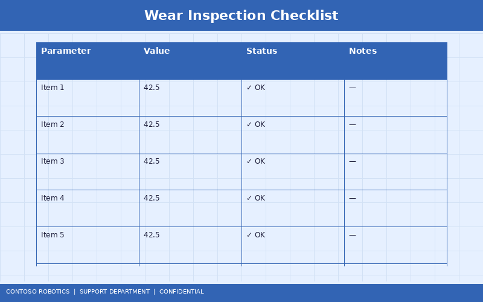

CoBot Pro Preventive Maintenance Schedule
Regular preventive maintenance ensures the CoBot Pro 500 and CoBot Pro 700 continue to operate safely, reliably, and within specification. This guide provides daily, weekly, monthly, quarterly, and annual maintenance procedures. Following this schedule maximizes the robot's lifespan (rated at 35,000 operating hours) and maintains warranty coverage. For real-world maintenance best practices from production deployments, refer to the Customer Success Story available from Contoso Robotics Marketing.
1. Maintenance Schedule Overview

| Frequency |
Task Category |
Estimated Time |
| Daily |
Visual inspection, basic diagnostics |
5–10 minutes |
| Weekly |
Cable inspection, cleaning, log review |
15–20 minutes |
| Monthly |
Calibration verification, backup, safety tests |
30–45 minutes |
| Quarterly |
Lubrication, thorough mechanical inspection |
1–2 hours |
| Annual |
Full calibration, component replacement, certification review |
4–8 hours |
2. Daily Checks (Every Shift Start)
- Visual inspection: Walk around the robot and inspect for visible damage, loose cables, leaks, or debris in the workspace.
- E-Stop test: Press and release the teach pendant E-Stop. Verify the robot enters STO and recovers after reset.
- Status LEDs: Confirm the control cabinet main LED is solid green and the SC-100 safety LED is solid green.
- Quick accuracy check: Jog the robot to a known reference point and visually confirm it reaches the expected position. For critical applications, measure with a ruler or dial indicator.
- Error log review: On the teach pendant, check Diagnostics → Event Log for any warnings or errors logged since the last shift.
3. Weekly Checks
- Cable inspection: Examine all external cables (power, EtherCAT, safety, I/O) for abrasion, kinking, or connector damage. Pay special attention to cables near joint pivot points where flex fatigue occurs.
- Tool and end-effector: Inspect the tool mounting bolts (ISO 9409-1 flange) for tightness. Check gripper wear pads, suction cups, or tool-specific consumables.
- Clean the robot: Wipe down the arm with a damp (not wet) lint-free cloth. Do not use solvents on the joint seals. Clean the VM-200 camera lens if a vision module is installed.
- Air quality: In dusty or oily environments, check the control cabinet air filter (if equipped with the optional filter kit CB-AF-200). Replace the filter if visibly dirty.
- Backup user programs: Export all programs to a USB drive or network share as a weekly backup.
4. Monthly Checks
- Calibration verification: Navigate to Settings → Calibration → Verification. The robot moves to three reference positions and compares the measured joint angles against the stored calibration. A deviation >0.05° on any joint should prompt recalibration.
- Safety zone test: Run the zone boundary test from Safety → Zone Configuration → Test. Verify the SC-100 triggers the correct response at each zone boundary.
- Force limit test: Run the collision detection test from Diagnostics → Force Limits. Verify the robot stops within the configured force threshold (default 150 N).
- Full system backup: Perform a full system backup including OS configuration, safety parameters, calibration data, and user programs.
- Firmware check: Check Settings → System Update for available firmware updates. Review release notes before scheduling an update.
- Encoder battery check: Review battery voltages for all joint encoders under Diagnostics → Encoder → Battery Status. Replace any battery below 2.9 V.
5. Quarterly Maintenance

- Joint lubrication: Apply 5 ml of Contoso RoboGrease LT-4 (part number CB-LUB-100) to each joint's lubrication port using the included grease gun. Over-lubrication can damage seals—do not exceed 7 ml per joint.
- Harmonic drive backlash check: Run the backlash measurement from Diagnostics → Mechanical → Backlash Test. Acceptable: <0.02° per joint. If backlash exceeds 0.03°, schedule a harmonic drive replacement.
- Brake holding test: Command each joint to hold a static load for 60 seconds with power to the motor disabled (brake-only mode). Verify zero drift on the joint position encoder.
- EtherCAT communication health: Review 90-day EtherCAT statistics under Diagnostics → EtherCAT → Long-Term Statistics. Total frame loss should be <0.001% of total frames.
- Control cabinet inspection: Open the cabinet (with power disconnected) and inspect for dust buildup on circuit boards, loose terminal connections, and fan operation. Use compressed air (max 2 bar) to remove dust.
6. Annual Maintenance
- Full joint calibration: Perform a complete joint calibration including gravity compensation recalibration. This is mandatory to maintain the ±0.03 mm (Pro 500) or ±0.05 mm (Pro 700) repeatability specification.
- Force-torque sensor calibration: Recalibrate the force-torque sensors in each joint using the built-in calibration routine. For detailed sensor specifications and calibration procedures, refer to the Force-Torque Sensor Specification in the Engineering documentation.
- Cable replacement assessment: Inspect all flex cables for signs of fatigue (cracking, fraying, resistance changes). Cables at joints 1–3 typically last 5+ years; cables at joints 4–6 (higher flex cycles) should be replaced every 3 years or 20,000 operating hours.
- Encoder battery replacement: Replace all joint encoder batteries proactively, regardless of measured voltage. Use only Contoso-approved CR2032 batteries (part number CB-BAT-032).
- Safety certification review: Review the SC-100 audit log for the past year. Verify all safety configuration changes were authorized and documented. Archive the audit log per your facility's compliance requirements.
- VM-200 lens and sensor cleaning: If the vision module is installed, perform a deep cleaning of the camera lenses and structured light projector optic using the Contoso Vision Cleaning Kit (CB-VCK-100).
7. Replacement Parts Reference

| Part |
Part Number |
Typical Lifespan |
| Joint flex cable (J1–J3) |
CB-FLX-100 |
5 years / 30,000 hours |
| Joint flex cable (J4–J6) |
CB-FLX-200 |
3 years / 20,000 hours |
| Harmonic drive unit |
CB-HD-[joint] |
25,000 hours |
| Joint encoder battery |
CB-BAT-032 |
1 year (replace annually) |
| Control cabinet fan |
CB-FAN-120 |
3 years / 25,000 hours |
| Air filter (optional kit) |
CB-AF-200 |
3–6 months (environment dependent) |
| RoboGrease LT-4 cartridge |
CB-LUB-100 |
1 cartridge per 4 quarterly services |
All replacement parts are available through the Contoso Robotics Parts Portal at parts.contoso-robotics.com or by contacting your regional distributor.
Document version 4.2.0 | Last updated: 2025-01-15 | Contoso Robotics Technical Support